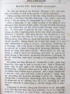
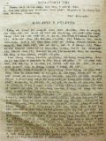

Languages
台文
｜
中文
｜
日本語
｜
English
字體
小
｜
中
｜
大
首頁
/
白話字數位典藏
白話字數位典藏全文檢索
查詢模式
選擇年代
清國時代(1885-1895)
日本時代(1895-1945)
戰後(1945-1969)
1885-1895
1896-1905
1906-1915
1916-1925
1926-1935
1936-1945
1946-1955
1956-1965
1966-1969
1970-1980
1980-1990
1990-2000
2000-2010
2010-
選擇文類
詩
散文
小說
戲劇
傳記
選擇作者
陳清忠
陳清義
編輯部
柯設偕
吳天命
明有德
偕叡廉
周天來
劉華義
王守勇
林茂生
陳添旺
王占魁
柯維思
賴仁聲
陳瓊琚
雪峰逸嵐
吳清鎰
郭水龍
蕭樂善
許水露
葉金木
陳金然
章王由
廖得
鄭連坤
潘道榮
楊士養
梁秀德
劉約翰
周淑慧
高金聲
林燕臣
黃六點
蔡愛義
許有才
主筆
巴克禮
陳鳩水
郭朝成
張基全
陳明清
陳能通
拾穗生
顏振聲
卓恆利
傳道局
胡文池
劉主安
鄭兒玉
李水車
其他
郭希信
大橋流太郎
張金波
潘文才
陳溪圳
徐春生
Google Search
Yahoo Search
全部
刊名
標題
標題(教羅)
全文
全文(教羅)
作者
第100頁，共108頁(共2,148筆資料) 0.67361092567444sec
1
...
98
99
100
101
102
...
108
To Page
GO
文字列表
圖文列表
排序
日期
文類
刊名
作者
影像
[1926-1 芥菜子 文類-散文 作者-劉約翰/Lâu Iok-hān]
(3)
基督教做成功Ê要素 [ KI-TOK-KÀU CHOÈ SÊNG-KONG Ê IÀU-SÒ͘ ]
基督教做成功Ê要素 深理kap淺理是對反，能力kap人力也無相同。求世界ê智慧是用人力，求靈界ê智慧是用靈力－就是用誠心祈禱得著神ê啟示－。小智慧是先知後來行，大智慧是先行後來知。求智慧時刻毋敢離開我，離開我就無主；信神時刻毋敢有我，就無神。所以人理是淺--ê，天理是深--ê；淺理用智，深理用信。 神kap人是相幫贊ê，神用人ê身軀來顯出道理人倚靠人ê力來成事。人ê力已經盡，靈ê力就來－哥林多後書12:9－10－盡力是人ê本份。職份&eci...
[1926-1 芥菜子 文類-散文 作者-李水車/Lí Chuí-chhia]
(2)
著學蚼蟻 [ TIO̍H O̍H KÁU-HIĀ ]
著學蚼蟻 貪憚ê人ah！啥事毋看蚼蟻來學伊ê智慧！」箴言6:6. 所羅門是智識ê人，伊叫人著學蚼蟻ê智慧。蚼蟻是至細ê動物，有啥物thang予咱學，有深深ê意思佇teh。照現時ê動物學者teh研究蚼蟻，論伊ê家庭逐項有次序、有房間、有粟倉；會相刣，也有嫁娶。若看樹頂ê蚼蟻岫，就知實在真有智慧，逐項真堅固，親像炮台ê款。蚼蟻有啥物智慧？斟酌來想幾若款：－ 1. 蚼蟻ê勤儉。 a. 蚼蟻ê骨力。逐日勤勤做工，暗時也做無煞。論伊&e...
[1926-1 芥菜子 文類-散文 作者-柯設偕/Koa Siat-kai]
(3)
兩款Ê果子 [ NN̄G KHOÁN Ê KÉ-CHÍ ]
兩款Ê果子 聖經有講起兩款ê果子，就是聖神ê果子kap魔鬼ê果子。 聖神ê果子就是：仁愛、和平、歡喜、吞忍、慈悲，善良、忠信、溫柔、撙節遮个。請讀加拉太5:22－23。 魔鬼ê果子就是：相爭、結怨、奸詐、詭譎、僥疑、怨恨、結黨、分爿、陷害、怨妒、譭謗遮个。請讀加拉太5:20－21。 聖神ê果子kap魔鬼ê果子，相對反。聖神ê果子是好ê，魔鬼ê果子是歹ê。聖神ê果子是屬佇上帝，魔鬼ê果子是屬佇撒旦。聖神&...
[1926-1 芥菜子 文類-散文 作者-其他/Kî-tha]
(3)
鬼ê款 [ KUÍ Ê KHOÁN ]
「鬼ê款」 （雅各. 3:15） 鬼無有定著ê款式，一國講一款，就一人亦講一款。鬼是對叼來？ 「撒旦遍行天下，往來無定著，」（約伯1:1－17）人若聽見鬼就驚，看見鬼就走到無路thang去bih。總是若干但聽見，干但看見是無啥物thang驚 人常常毋免驚ê出力驚，應該著驚--ê，袂曉thang驚。今啥物是thang驚ê？咱著倒想看，看咱逐个所做，是合佇聖神á是屬佇幾个款，若是所行親像鬼這chiah是thang驚--ê. 撒旦ê計劃真正gâu，伊ê事業真...
[1926-1 芥菜子 文類-散文 作者-陳瓊琚/Tân Khêng-ku]
(4)
儒教ê女性觀 [ JÛ-KÀU Ê LÚ-SÈNG KOAN ]
儒教ê女性觀 世界ê人數約有15億萬，內中一半thang講是女子。所以咱若來研究論in ê生活狀態，in ê地位，in所受ê待遇，佮in佇社會中所貢獻是啥物，以及別項等等是真心適閣也是真要緊。對早到今ná日，khah濟人論婦女這方面攏無致意，閣再真看輕--in。論in地位，待遇，教育等等所想著ê是真低。Taⁿ佇遮所愛寫淡薄做大家ê參考ê就是干但論儒教ê女性觀nā-tiāⁿ. 論儒教ê思想，咱知，thang講是重男輕女。咱若看易經就知佇彼內面有記載講「天尊地卑，乾坤定......」閣講「乾道成男，坤道成女。」看按呢就明白。閣再列子有「男尊女卑，故以男為（誤字nî）尊」總是列子其實毋...
[1926-5 芥菜子 文類-散文 作者-陳清義/Tân Chheng-gī]
(2)
基督徒的品格 [ Ki-tok-tô͘ ê phín-keh ]
基督徒的品格 咱大家知影對反悔信主了後就是做基督徒，抑是講做拜上帝的人。有這項真要緊著照顧。彼項是啥物？就是品格。基督徒欲予伊品格較純全、較高尚；著學啥物人的模樣？著學主耶穌的模樣。因為伊有完全的品格通予咱學，以外無；總是咱欲學到親像主耶穌的品格，是真oh得。毋kú也是著出力來學，上少也著學3項。這3項是基督徒不能免著有--的。這3項是啥物？ 1、仁愛的品格。 論仁愛的心是基督徒所應該著有。主耶穌有行完全的仁愛，咱著出力來學。伊佇世間所行逐項事攏是用仁愛做根本，不論是教示人、醫治人、拯救人，攏是對伊仁愛的心來顯出。咱著學伊，就會得著仁愛的結果。照保羅所講，...
[1926-5 芥菜子 文類-散文 作者-陳清忠/Tân Chheng-tiong ]
(3)
一日一世人 [ Chi̍t-ji̍t chi̍t-sì-lâng ]
一日一世人 「一日一世人」這句是甚物意思？這句全然毋是深的話，是淺現的話。就是想咱大家佇早起時出世，也臨終佇暗時；一日是咱的一世人。 怎樣按呢想？是因為昨昏已經過了，明仔日猶未來；過了的昨昏，未來的明仔日攏毋是咱的；kan-ta 今仔日是nā-tiāⁿ；所以著盡力佇今仔日一日。 昨hng已經過了，無論怎樣傷悲，怎樣懺悔，斷斷無閣來。 明仔日猶未來，到底會來，袂來，毋是咱所會知。下昏安眠，明仔早起精神，kiám-chhái全世界攏變做烏暗；甚物人敢講明仔日，日頭會閣出現？！ Ah，昨昏已經過了！明仔日猶未到！生，死；...
[1926-5 芥菜子 文類-散文 作者-郭水龍/Keh Chuí-lêng]
(2)
婦女tháu-pàng [ Hū-lú tháu-pàng ]
婦女tháu-pàng 現時男女平等的議論，毋但佇社會上宣傳地位、教育、權利、平等；就佇咱教會內閣較著代先開放；因為男女平等是人類同享的福氣。 1、婦女的地位。婦女的性受男性壓迫，彼个歷史有3000外年；若是稽考社會學，古早的社會用女性做主宰，就母系的時代，當時所生的囝兒只知有老母，毋知有老爸；因為老爸規年出外，囝兒罕得見伊的面；老母10月日懷胎，3年久飼奶，無一時離老母，老爸無擔當責任所以較毋bat--伊。後來家內人ná 濟，婦人人因為生育的關係，袂會出外趁食；一概所欠用的食穿攏對丈夫來，按呢可憐的婦人人失落獨立的氣力；就將母系變做父系；對遮漸漸失勢，做成一个無形...
[1926-1 芥菜子 文類-散文 作者-其他/Kî-tha]
(1)
著警省 [ Tio̍h Kéng-séng ]
著警省！！！ 這个二十世紀ê基督教，毋知有影照救世君ê大將Bu-su所講á無？若有，咱做彼世紀ê基督徒--ê，kiám毋著大大警醒mah！！！ 伊teh欲臨終ê時有講一句話，講：「照我想，佇這个二十世紀，基督教佇最危險ê時機。 就是： 基督教中無聖神， 基督教無基督， Ài得赦罪，無欲反悔， Ài得救無欲改舊換新， 辦事，毋免上帝， 信有天堂，無信有地獄。」...

[1926-1 芥菜子 文類-散文 作者-陳清忠/Tân Chheng-tiong ]
(3)
加拿大教會聯合 [ KA-NÁ-TĀI KÀU-HOĒ LIÂN-HA̍P ]
加拿大教會聯合 佇這五十年久北部台灣ê基督教會直接是屬佇加拿大ê長老教會。 參詳濟濟年了後，tông教會有kap米以米會、組合教會聯合。這算是最近佇in ê歷史中所經驗過ê一个大事。 這个聯合ê運動實在是對1902年起，總是到舊年ê 9月chiah實在見著人人所teh出力，所teh祈禱ài欲得著成ê結果。有濟濟ê原因來助成聯合ê希望，也這个ǹg望到路尾續成做不能免得ê要求。西爿加拿大闊大ê地方有趕緊要求所有ê...
[1926-8 芥菜子 文類-散文 作者-郭水龍/Keh Chuí-lêng]
(1)
諒解 [ Liōng-kái ]
諒解 芥菜子第 6號「喜出望外」欄內羅居的目睭內障的病。蘭醫生佮馬偕醫院無共伊手術是因為猶未熟，請列位著諒解。...
[1925-7 芥菜子 文類-散文 作者-郭希信/Keh Hi-sìn]
(1)
發刊辭 [ HOAT-KHAN-SÛ ]
發刊辭 對主後1872年偕牧師到北部台灣設教到今，已經有53
[1925-7 芥菜子 文類-散文 作者-大橋流太郎/Tāi-kiâu Liû-thài-lông]
(1)
祝發刊 [ CHIOK HOAT-KHAN ]
祝發刊 字kap文章就是上帝賞賜人特別ê恩典。親像對佇講話以及行踏，咱會得thang捌人ê款式；對佇文章咱猶原會。實在thang
[1925-7 芥菜子 文類-散文 作者-陳清忠/Tân Chheng-tiong ]
(1)
芥菜子Ê希望 [ KOÀ-CHHÀI CHÍ Ê HI-BŌNG ]
芥菜子Ê希望 北部這坵園已經開不止久。所ǹg望ái...
[1925-7 芥菜子 文類-散文 作者-張金波/Tiuⁿ Kim-pho]
(3)
疼Ê使徒 [ THIÀN Ê SÙ-TÔ͘ ]
疼Ê使徒 主耶穌ê學生約翰，一生所行ê好事真濟，伊熱心服事主，盡忠koh gâu疼人。佇流傳話ê中間，有一項

[1925-7 芥菜子 文類-散文 作者-潘文才/Phoaⁿ Bûn-châi]
(2)
教會Ê牌匾 [ KÀU-HOĒ Ê PÂI-PIÁN ]
教會Ê牌匾 人若看某生理店真鬧熱，真有生理，大趁錢，對按呢ná開ná大間，續成做商行；就kā伊想怎樣會按呢，的確有3項ê因端：(1)物件真，(2)價數實在，(3)頭家好，薪勞盡忠。Koh有某店頭怎樣靜悄悄，無生理，袂趁錢，這ná thang想有3項：
[1925-7 芥菜子 文類-散文 作者-蕭樂善/Siau Lo̍k-siān]
(2)
著贏少年人 [ TIO̍H IÂN SIÀU-LIÂN-LÂNG ]
著贏少年人 濟濟ê少年人不止贊成基督教，也濟濟親像信者，也若毋是nih。Beh引chhōa這款
[1925-7 芥菜子 文類-散文 作者-偕叡廉/Kai Jōe-liâm]
(2)
萬世代 [ BĀN-SÈ-TĀI ]
萬世代 佇這幾年中間科學直直teh進步。電燈電報、
[1925-7 芥菜子 文類-散文 作者-陳溪圳/Tân Khe-chùn]
(4)
毋通長短跤 [ M̄-Thang Tn̂g-Té-Kha ]
毋通長短跤 現時人若講主日學，就想是囡仔，若講佈道，就想是大人；按呢想也果然續按呢teh實行；其實基督ê意思kiám毋是ài主日學大人著在內，佈道囡仔著有份mah (馬太28:19-20.) 主日學kap佈道，形狀kap所做ê工有各樣，若是目的相款，平平是beh chhōa人到基督得著救，不過一爿是宣教的，一爿是教育的，教會若thang比並做身軀，就佈道kap主日學thang講教會ê兩支跤。教會teh求上帝國臨到求人ê得救，卻是對聖神kap恩典，總是彼个機關thang講著對佈道kap主日學，就是宣教k...
[1925-7 芥菜子 文類-散文 作者-徐春生/Chhî Chhun-seng]
(3)
七個災禍（馬太23: 13-36.） [ CHHIT-Ê CHAI-Ē (Má-thài 23: 13-36.) ]
七個災禍（馬太23: 13-36.） 這站ê聖冊是耶穌責備遐个假好ê經學士kap法利賽人。今仔日也是thang做叫醒咱ê精。 佇耶穌ê時代，猶太國有3个教派，1.撒都該，2.伊事年，3.法利賽。 經學士，舊翻譯叫做讀冊人；in是解明舊約，thang講是註解ê先生；in kap祭司長老，有入法利賽教，所以有時講經學士，也thang指法利賽。法利賽3字就是希伯來語，意思是離別；就是離開眾人，家己立教派。 論in ê教徒kap教理寫佇下面，thang做參考：－ A. 教徒。 (1)自誇家己&e...
第100頁，共108頁(共2,148筆資料)
1
...
98
99
100
101
102
...
108
To Page
GO
數位典藏國家型科技計劃
拓展台灣數位典藏計畫
版權所有 國立台灣師範大學 台灣文化及語言文學研究所©2008
10610 台北市和平東路一段162號│TEL 02-7734-5516│Fax 02-2358-2461
計劃簡介
典藏特色
執行架構
計畫典藏數位化流程
成員介紹
台灣白話字發展簡介
巴克禮牧師與《台灣教會公報》
廈門話字典-杜嘉德
白話字教學-打馬字
中國南方白話字發展
台灣基督教長老教會簡表
台灣基督教長老教會教會歷史委員會
《北部台灣基督長老教會教會ê歷史》
關於陳清忠
白話字文學：台灣文學的早春